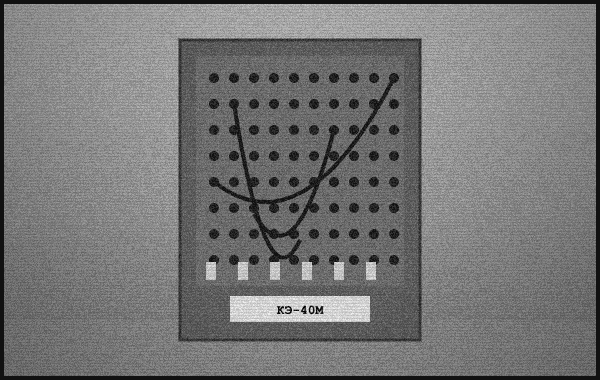

POS. 01 · ART. KE-40

Switchboard «KE-40M»
Crossbar switchboard of the highest reliability category. Formerly of military designation; now available to all. Practically indestructible.
CAPACITY40 LINES
MASS212 KG
SERVICE LIFE40 YEARS MIN.
IN PRODUCTION SINCE1964
PRICE ON REQUEST→ FAX